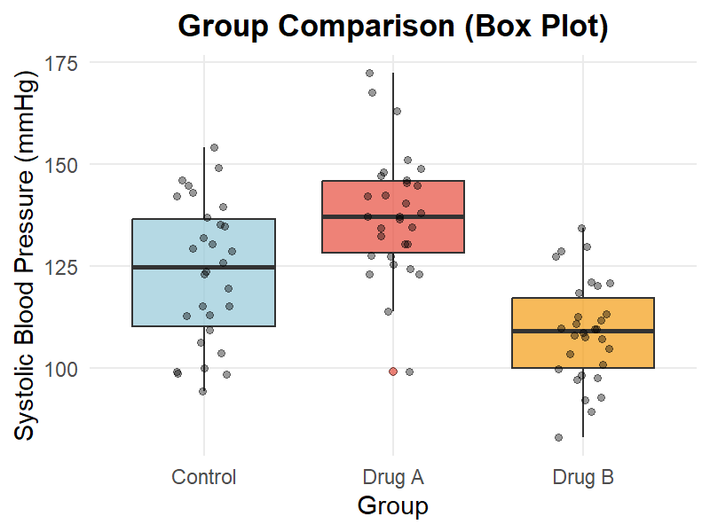
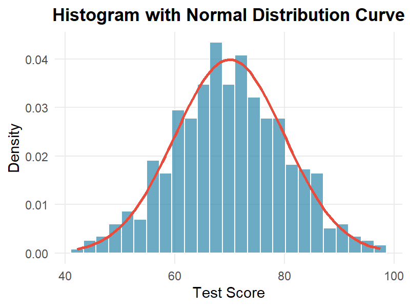
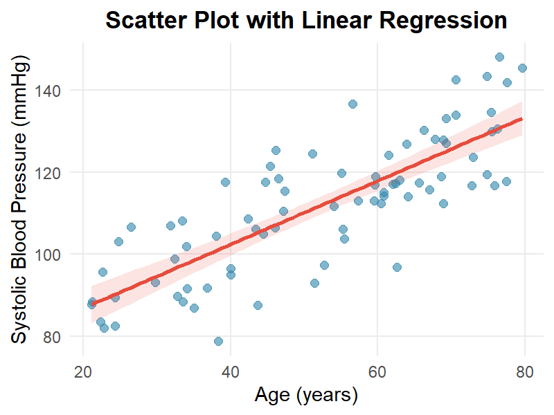
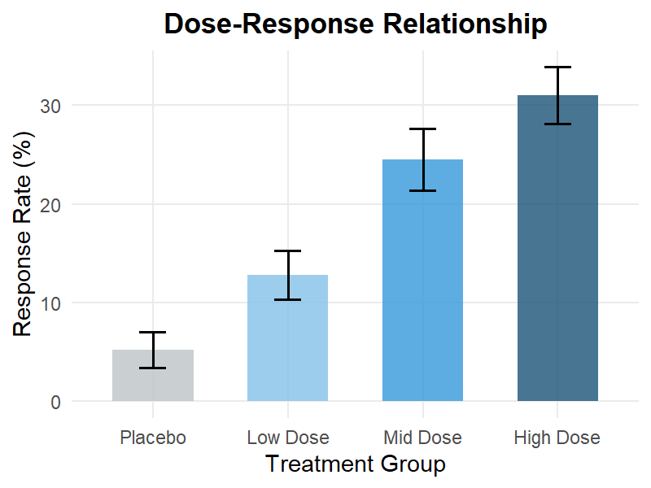
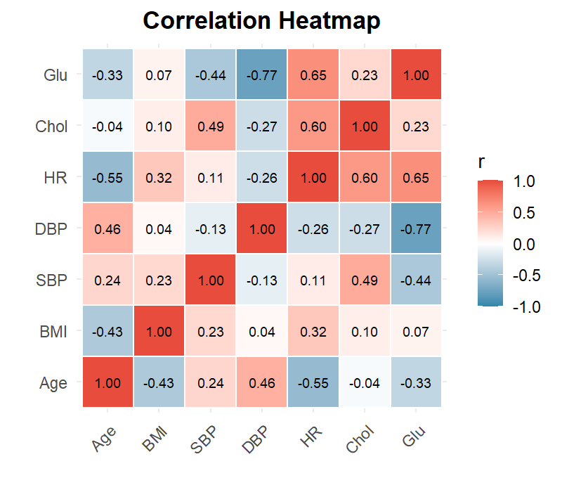
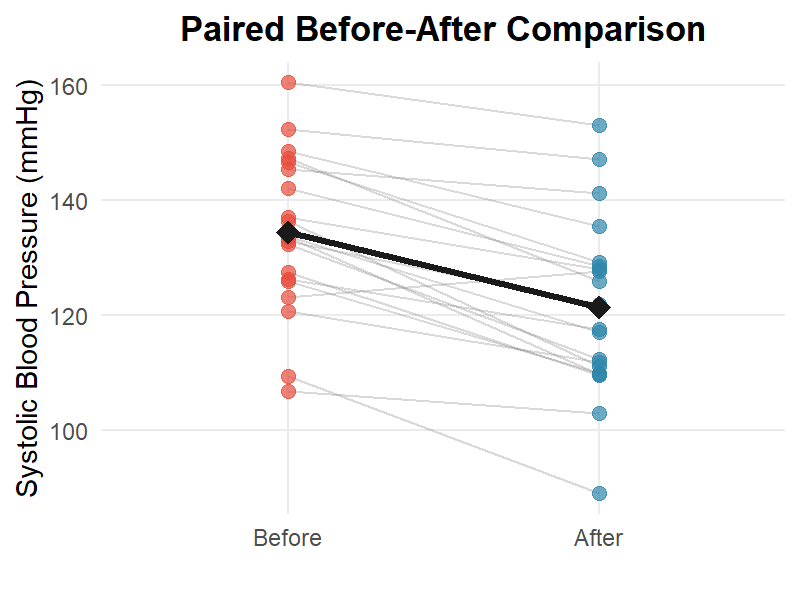
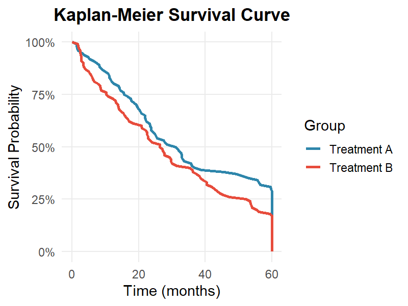
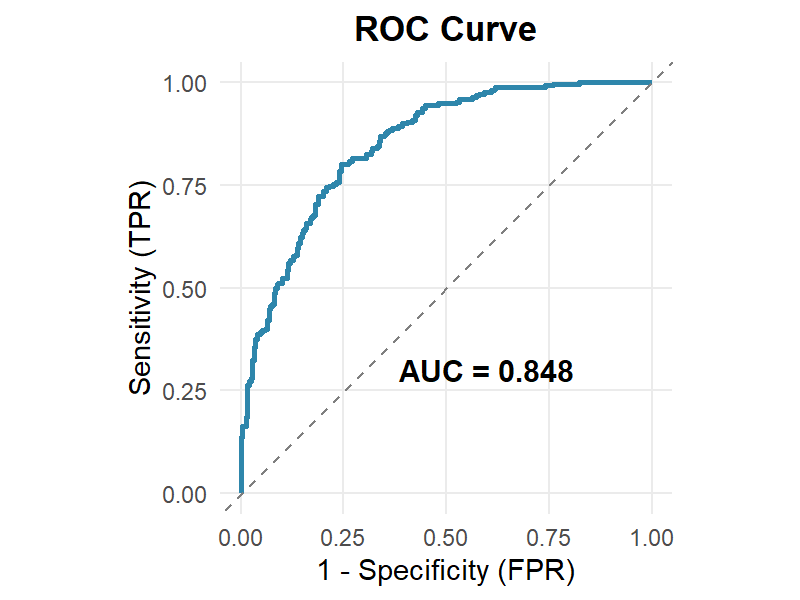
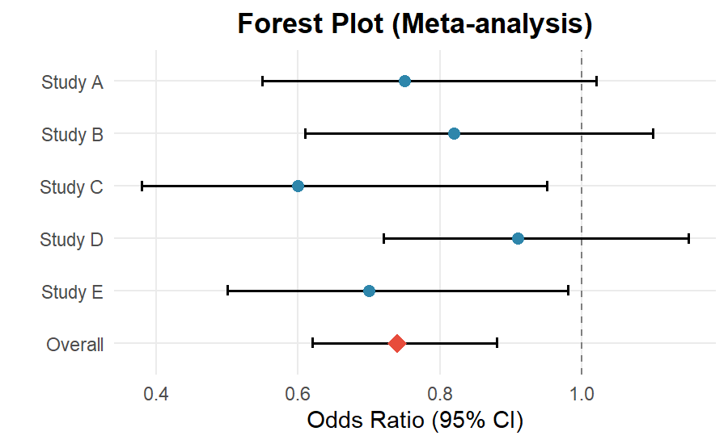
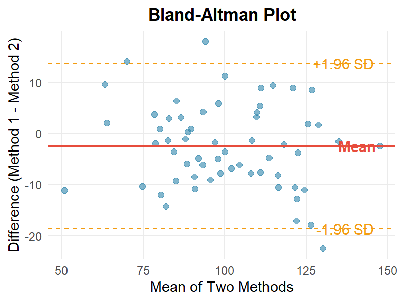

統計グラフ
基本的な統計解析で頻出するグラフのテンプレートです。データは架空のものです。

{kind=link}

{kind=link}

{kind=link}

{kind=link}

{kind=link}

{kind=link}
臨床研究グラフ
臨床研究や疫学研究で使用される専門的なグラフです。

{kind=link}

{kind=link}

{kind=link}

{kind=link}
テンプレート素材
三軸心電図やベクトル心電図などの専門テンプレートです。


使い方
- 使いたい画像の Download PNG ボタンをクリック、または画像を右クリックして保存
- Word・PowerPoint・LaTeX などに貼り付けてご利用ください
- 直接リンクで埋め込む場合は、画像を右クリック → 「画像アドレスをコピー」
- クレジット表記は不要ですが、記載いただける場合は
MedGraph Freeとお書きください
画像の直接URL（Markdown / HTML 埋め込み用）
以下のURLをコピーしてお使いください。
https://s-yus.github.io/medical_images/km_survival_curve.png
https://s-yus.github.io/medical_images/roc_curve.png
https://s-yus.github.io/medical_images/boxplot_comparison.png
https://s-yus.github.io/medical_images/barplot_errorbars.png
https://s-yus.github.io/medical_images/scatter_regression.png
https://s-yus.github.io/medical_images/histogram_normal.png
https://s-yus.github.io/medical_images/forest_plot.png
https://s-yus.github.io/medical_images/bland_altman.png
https://s-yus.github.io/medical_images/heatmap_correlation.png
https://s-yus.github.io/medical_images/paired_before_after.png
https://s-yus.github.io/medical_images/triaxial_template.png
https://s-yus.github.io/medical_images/vecg_template.png
https://s-yus.github.io/medical_images/triaxial_vecg_template.png
https://s-yus.github.io/medical_images/roc_curve.png
https://s-yus.github.io/medical_images/boxplot_comparison.png
https://s-yus.github.io/medical_images/barplot_errorbars.png
https://s-yus.github.io/medical_images/scatter_regression.png
https://s-yus.github.io/medical_images/histogram_normal.png
https://s-yus.github.io/medical_images/forest_plot.png
https://s-yus.github.io/medical_images/bland_altman.png
https://s-yus.github.io/medical_images/heatmap_correlation.png
https://s-yus.github.io/medical_images/paired_before_after.png
https://s-yus.github.io/medical_images/triaxial_template.png
https://s-yus.github.io/medical_images/vecg_template.png
https://s-yus.github.io/medical_images/triaxial_vecg_template.png